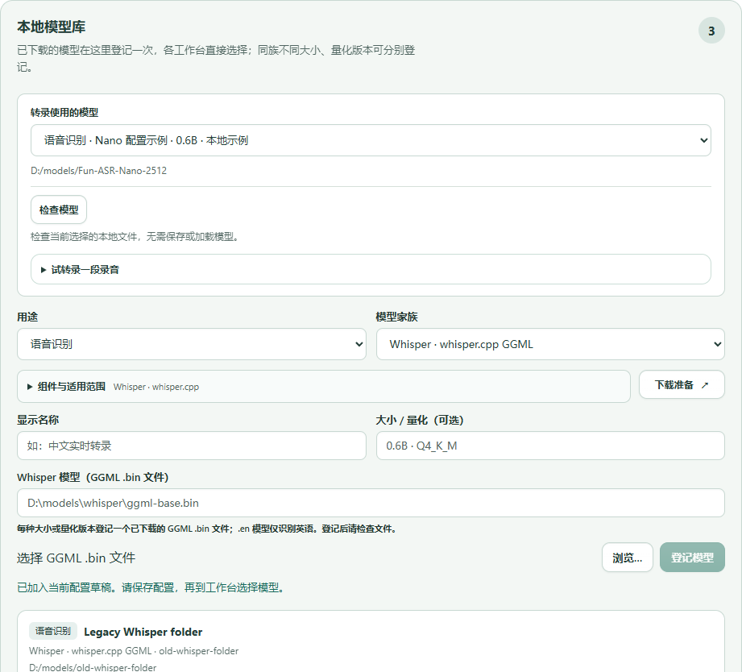
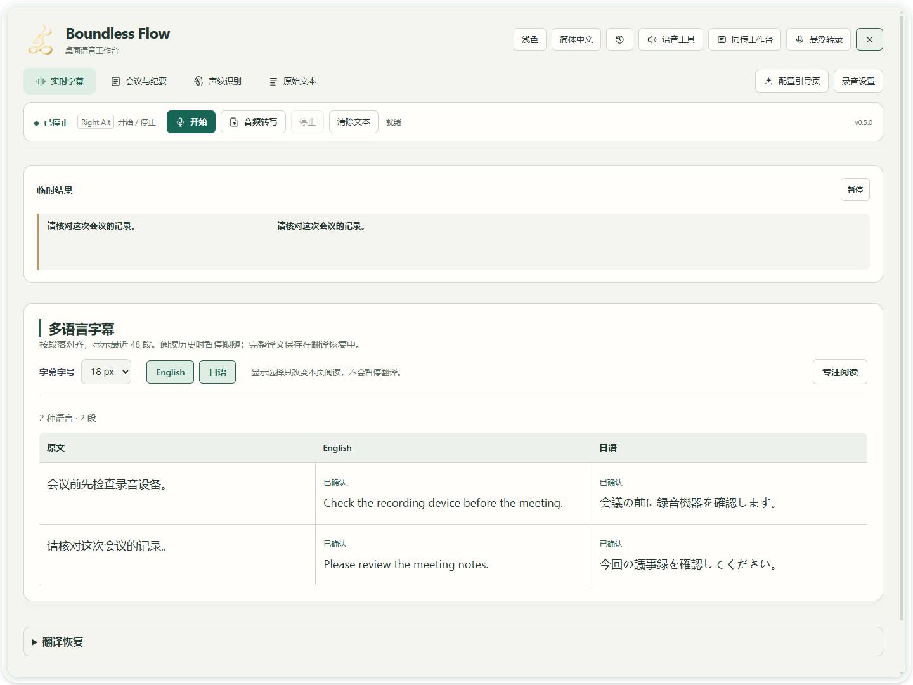
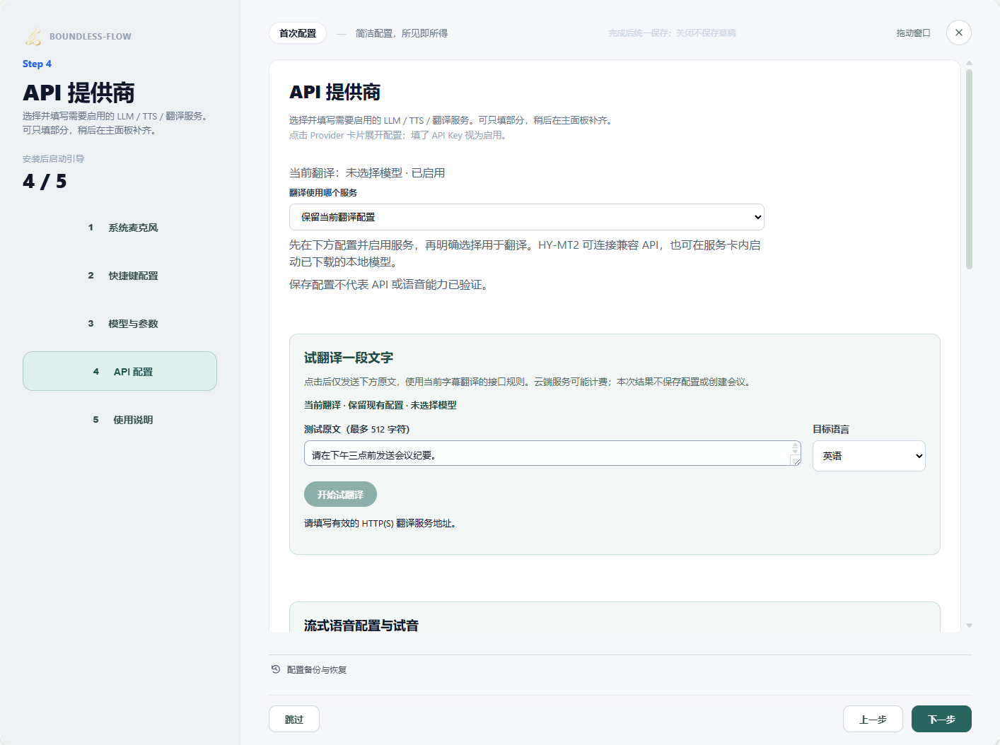
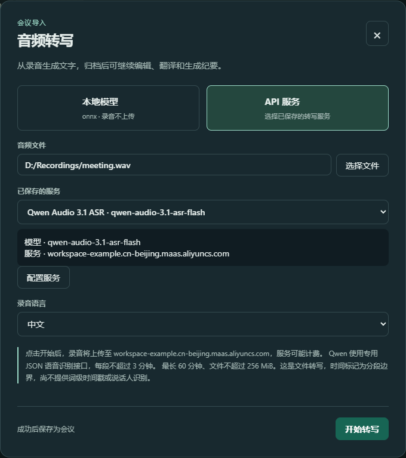

场景教程
讲话变文字与多语言字幕
适合口述笔记、听课和远程通话字幕。
你能得到什么
看到原文与已有译文，保留可复制、导出的转录记录。
开始前准备
- 完成输入设备和识别模型检查；远程通话须试录确认输入包含所需声音。
- 需要译文时，先完成翻译文本试用；ONNX／FunASR 实时管线目前最多三路译文。
使用阿里云实时转写
Aliyun · Paraformer 实时转写已包含在 r466 预览版；r468 候选版进一步统一模型配置。在配置引导保存一次地址、Key 和模型，录音时选择已保存的 Aliyun，更换模型点击「管理服务」。服务端确认句子，停止后继续等待收尾；云账号和实体麦克风验收仍待完成。
使用豆包语音实时转写
r468 候选版包含独立的豆包语音实时识别连接。在配置引导保存一次语音服务地址、Key 和资源，录音页选择已保存的 Doubao；更换资源点击「管理服务」。请把源语言设为自动、提示留空，停止后等待确认。账号与实体录音效果仍需验证。
识别模型怎么选、怎么安装
ASR 与 STT 都是把语音转成文字。打开配置引导页 → 本地模型库，将用途设为「语音识别」，再选模型家族；可分别登记多个模型、大小或量化版本，使用时再选择已登记的条目。
| 模型或方式 | 需要选择什么 | 在软件中怎么用 |
|---|---|---|
| SenseVoice · ONNX | 含 model.onnx 与 tokens.json 或 tokens.txt 的兼容模型文件夹。 | 按录音片段识别，用于字幕和会议。 |
| Fun-ASR-Nano · 2512 | 完整 Fun-ASR-Nano-2512 文件夹，包括 model.pt、config.yaml，以及 Qwen3-0.6B 配套配置和分词器。 | 按录音片段识别，用于字幕和会议。安装版须包含此 Rust 后端；它不是持续输出 token 的原生流式识别器。 |
| Whisper · whisper.cpp | 实际 GGML 格式的 ggml-*.bin 文件。下载预设初始只选 ggml-base.bin，也可自行改选其他兼容文件。 | 用于音频文件转写；名称带 .en 的仅英语模型不能识别中文。 |
| 已保存的语音 API | 前往 API 配置，保存服务地址、模型与凭据。 | 文件转写与实时音频会话使用不同接口；Qwen 专用实时协议不能代入 OpenAI 兼容转写入口。 |
- 已有文件，点击对应卡片的登记已有模型。给不同大小或量化版本起易分辨的名称，浏览选择模型文件夹或文件，再登记。若表单中有未保存内容，先登记、保存或取消，再切换模型。
- 还没有文件，点击下载准备，选择 Hugging Face 或 ModelScope，以及自选磁盘上的可写文件夹，然后扫描。核对文件选择与总大小后，再明确开始下载；打开预设不会自动下载。
- 下载完成后，明确加入模型库。Whisper 需要选中实际下载的 GGML 文件；FunASR Nano 的根 model.pt 已含语言模型权重，不需另行下载 Qwen 权重。
- 刷新组件状态并检查文件。若当前构建没有后端或识别组件，请使用包含该组件的安装包；登记模型路径不会自动安装组件。
- 试转录一段短录音，核对文字后完成并保存配置。找到组件、下载完成、文件检查通过，都不等于识别质量或实时性能已满足要求。
登记后，在库上方「转录使用的模型」选择名称，点击「检查模型」，再展开「试转录一段录音」。需要下载时，点击当前家族旁的「下载准备」，或展开库后方的「下载模型与组件」；先核对来源和目标磁盘，再明确开始下载。登记只加入当前草稿，最后请完成并保存配置。


本地 SenseVoice 与 FunASR Nano 使用分段识别，临时文字可能在定稿前变化。实时 API 先在配置引导中保存连接，再到录音设置选择兼容的已保存服务。只有明确提交的音频会发送到相应服务。
本地 Fun-ASR-Nano 转写长文件时，录音按最长 16 秒的非重叠片段依次处理，不足 16 秒的末段也会处理。各片段独立保留文字，重复发言仍需对照录音复核。查看分段进度，取消后等待任务结束。模型未正常结束生成时会报错；取消或失败不算全文转写成功，保留原录音，检查提示后再重试。
逐步操作
- 01
先录一句完整的话
打开「实时字幕」，点击「开始」，用正常音量说一句话。临时文字可能变化；等段落定稿后再判断内容。结束时点击「停止」。

真实软件界面 · 点击放大；图中示例数据不代表你的结果 - 1这里显示识别中的临时文字。
- 2译文按语言和段落展示。
- 02
开启需要的翻译语言
在配置中选定已测试成功的翻译服务与主目标语言。先试一种语言，成功后再增加额外语言；每种语言分别请求，可能增加耗时。修改在下一次录音生效。

真实软件界面 · 点击放大；图中示例数据不代表你的结果 - 1选择已配置的翻译服务。
- 2先填写一小段测试原文。
- 3选择目标语言。
- 4配置有效后点击开始翻译。
- 03
需要小窗时打开「悬浮转录」
点击顶部「悬浮转录」。悬浮控制里的麦克风开始／停止转录，返回按钮可回主窗口。双语字幕窗用于阅读；先用点击方式确认录音状态，再试已配置的快捷键。

真实软件界面 · 点击放大；图中示例数据不代表你的结果 - 04
复核、复制或导出
停止后打开「原始文本」复核，点击复制或导出文本。译文失败时进入「翻译恢复」明确重试；重试云端请求可能再次计费。

真实软件界面 · 点击放大；图中示例数据不代表你的结果 - 1复制识别原文。
- 2将原文导出为文本文件。


已有录音，转成文字
会议录音、课堂录音或口述备忘已经保存为 WAV 时，可以从「音频转写」导入。API 文件转写目前接受最长 60 分钟、大小不超过 256 MiB 的 WAV。软件会为识别准备单声道 16 kHz 音频，保留原文件。麦克风实时字幕请按上方步骤操作。
- 01
在配置引导里保存服务
打开「配置引导页」，进入「API 提供商」，展开「Qwen Audio 3.1」。启用该服务，在 Base URL 中填写工作区 HTTPS 根地址，将下方的
WorkspaceId换成你的阿里云工作区 ID。https://{WorkspaceId}.cn-beijing.maas.aliyuncs.com填写该工作区可用的 API Key，在 ASR 模型框中完整填写
qwen-audio-3.1-asr-flash。只填一个模型名称，不用逗号分隔，也不要把接口路径接到根地址后面。继续到最后一步，点击「完成并保存」；直接关闭引导会丢弃本次修改。已有 OpenAI 兼容文件转写服务时，在「OpenAI」项保存对应 Base URL、API Key 和可用的 ASR 模型，再完成保存。本地兼容服务可按其要求留空密钥。提供商的其他 ASR 模型不一定使用相同接口，不会全部列入转写列表。
- 02
选录音，再选已保存的服务
回到主窗口，点击「音频转写」，再点「选择文件」选中 WAV。弹窗默认使用「本地模型」；需要云端或兼容 API 时，切换到「API 服务」，在「已保存的服务」中选择连接。核对显示的模型和服务主机，弹窗里不需要再次填写地址或密钥。
中文录音在「录音语言」中选择「中文」；不确定语言时选择「自动识别」。这个选项描述录音中的语言，不是翻译目标语言。列表为空时点击「配置服务」，弹窗会关闭并打开配置引导；保存后重新打开「音频转写」。

当前软件实际界面。录音路径与工作区连接为示例，请使用自己的已保存配置；录音语言选择中文。 - 1点击「选择文件」，选中自己的 WAV。
- 2选择已保存连接，核对下方模型和服务主机。
- 3选择录音语言，这里不是翻译目标语言。
- 4阅读上传提示后，点击「开始转写」。
- 03
确认上传位置，开始转写
阅读弹窗中的上传提示，再点击「开始转写」。API 模式会把录音发送到所选服务，可能产生费用。Qwen 每段不超过 3 分钟，OpenAI 兼容服务每段不超过 5 分钟；软件会在整份文件的限制内自动分段，不需要手动切开录音。
处理期间可查看已完成的段数。需要停止时点击「取消转写」，等待取消结果；按 Esc 也会请求取消。显示「保存中」时，会议正在归档，等待保存结束。
- 04
打开会议记录，逐段核对
成功后录音会保存为会议，在「会议与纪要」中选择新会话。对照原录音检查人名、数字和专有名词，再继续翻译、生成纪要或导出。
这条 API 导入流程的时间标记是录音分段边界，尚不采用服务返回的词级时间戳或说话人标签。发言人未识别时请人工核对，不要把同一分段当成同一个人。

怎么知道成功
原文与实际讲话对应；开启翻译后出现目标语言；复制或导出的文件包含需要的段落。
遇到问题
只能听见自己的声音
当前流程采集「输入设备」中的所选设备；会议软件正在播放，不代表它会自动录入。请返回「配置引导页」第一步，选择已设置的、能够包含对方声音的输入设备，点击「开始 5 秒试录」，让对方讲话并回听。回听没有对方声音，就先处理输入来源，不要通过更换识别模型解决。设备列表没有合适输入时，当前无法直接选择该会议应用的声音。
字幕停在旧内容
查看录音状态与阅读跟随状态。阅读历史时会暂停跟随；重新跟随后确认新段落。
有原文但没有译文
检查翻译服务、目标语言及失败记录，先重复文本试用。转录和翻译可分别成功或失败。
文件转写列表里没有刚保存的 Qwen 服务
回到「配置引导页」的「API 提供商」，确认服务已启用、API Key 已填写，ASR 模型是 qwen-audio-3.1-asr-flash，Base URL 是替换过 WorkspaceId 的 HTTPS 根地址。不要填写 /v1、/audio/transcriptions 或完整接口路径。点击「完成并保存」后重新打开转写弹窗。Realtime、Streaming 和其他模型名称不能代替这个文件识别模型。
API 转写报鉴权错误或没有结果
核对密钥、工作区、模型可用权限和服务连通性；HTTP 401 通常需要检查鉴权。再用一小段清晰的中文 WAV、录音语言「中文」重试，重试可能再次计费。界面和接口接入不代表你的账号已开通服务或识别质量一定符合要求。
录音格式或大小不符合要求
API 文件转写当前只接受 WAV，整份文件最长 60 分钟、最大 256 MiB。其他格式请先另存为 WAV；超出限制时另存或拆分录音后再导入。保留原录音，逐段检查转换后的内容。
导入的时间或发言人看起来不够精细
API 导入按录音分段标记时间，不是词级对齐；说话人仍需人工复核。先核对全文和重要信息，再为已确认的段落修改人物名称。